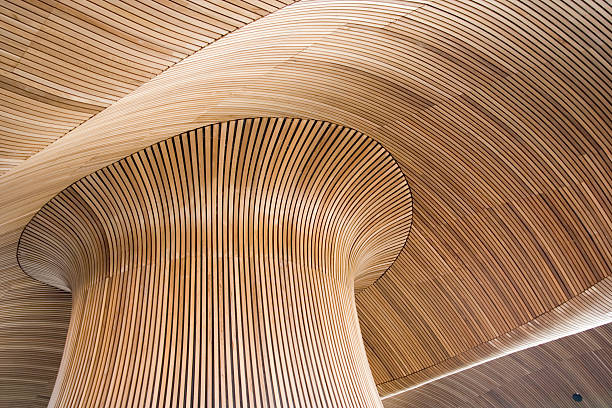

Ekspertizë pa kompromis.
Archicad BIM Experts
Sustainable Design Certified
Residential P+12 Masterplans
Minimalist Geometry
Archicad BIM Experts
Sustainable Design Certified
Residential P+12 Masterplans
Minimalist Geometry
01
Master-plane & Koncept
Specializuar në zhvillimin e master-planeve komplekse rezidenciale deri në P+12, duke kombinuar gjeometrinë e pastër me funksionalitetin urban.
02
Arkitekturë BIM
Saktësi milimetrike përmes teknologjisë BIM në Archicad. Hartojmë modele informacioni ndërtimi për eficiencë dhe kontroll maksimal teknik.
03
Sustainable Design
Bazuar në certifikimet tona UGREEN, integrojmë dizajnin e qëndrueshëm që rrit eficiencën e energjisë dhe harmoninë me natyrën.
04
Llogaridhënie & Mbikëqyrje
Një histori e provuar e llogaridhënies. Mbikëqyrim çdo fazë të realizimit për të siguruar përputhshmëri 100% me projektin minimalist.
Pure Elements
Materialiteti

Beton

Xham

Lis